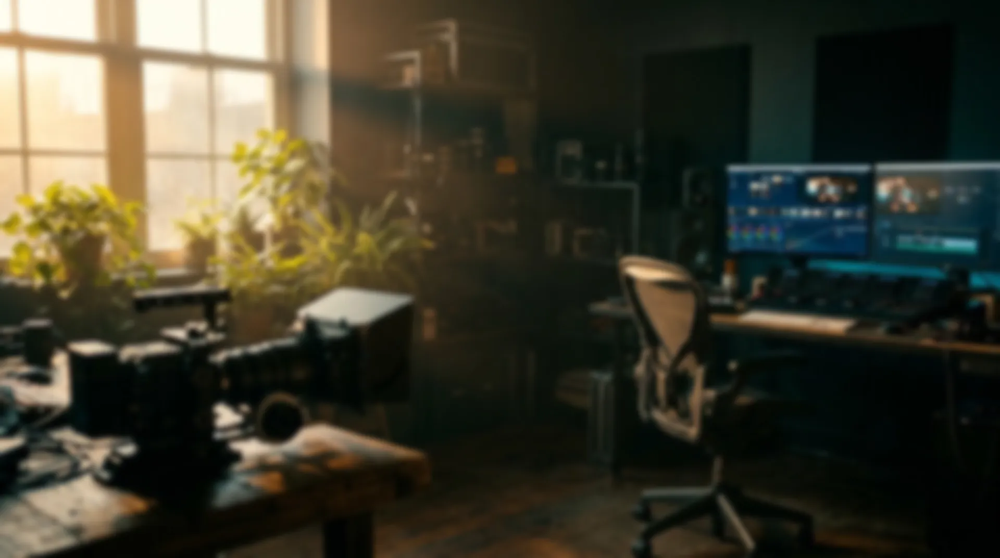
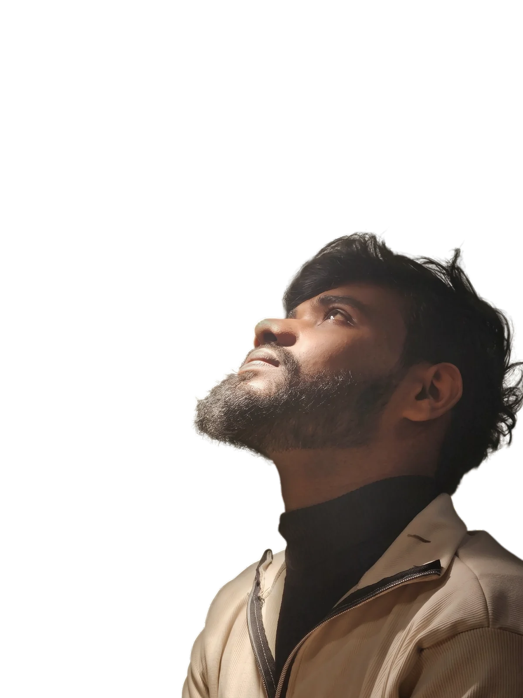
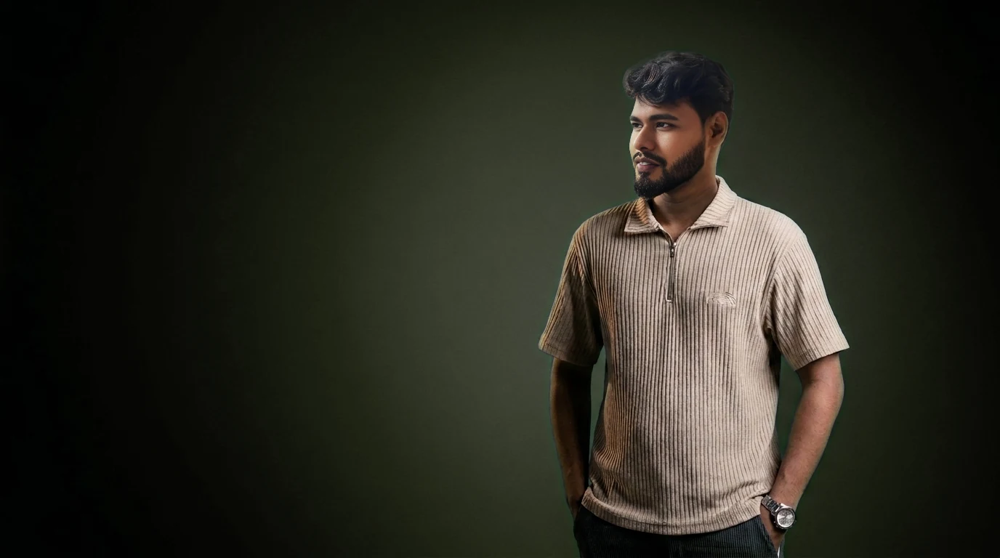
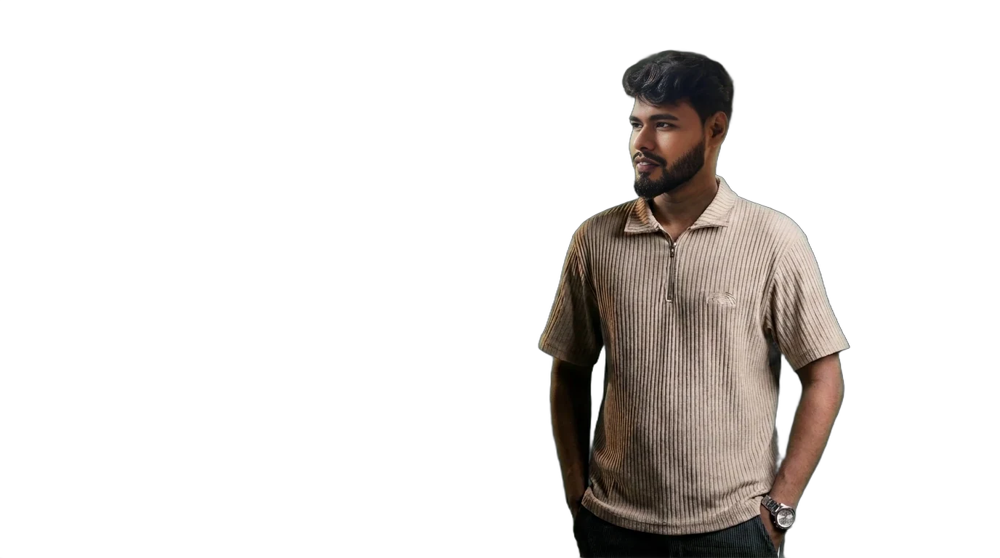
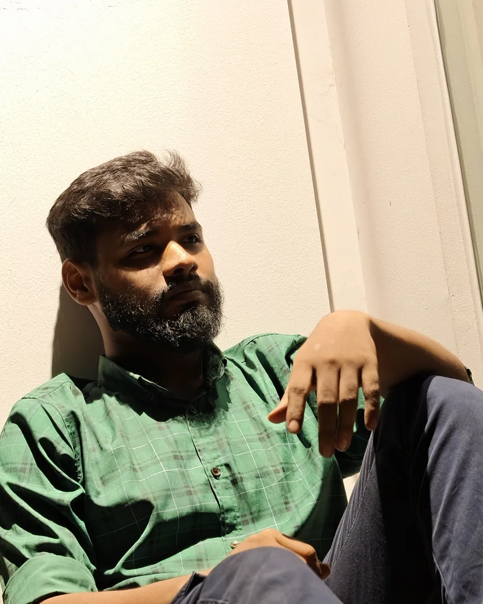
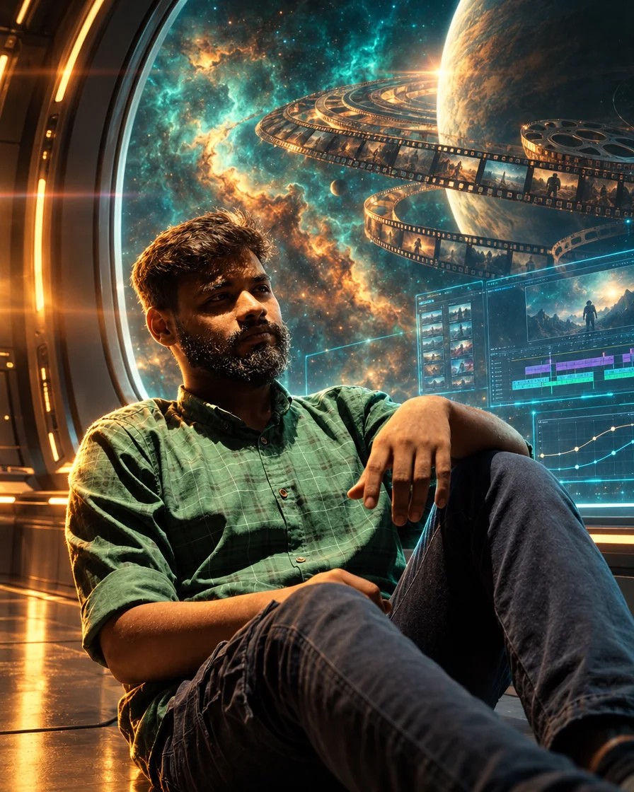
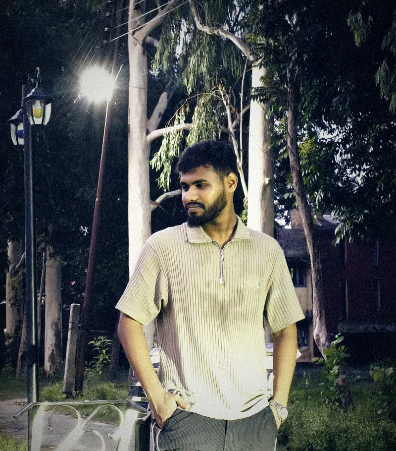

I don't just cut clips.I tell stories.

Documentaries, YouTube, ads & reels.
Less noise.
More story.
Video editor & motion designer. I shape raw footage with light, rhythm and sound into films people feel, from YouTube and documentaries to ads and reels.


Who am I?
I cut videos people finish watching. From the hook to the last frame.
SC 02 · Take 1Selected works
The cut isEverything
History documentaries, faceless YouTube, online video commercials and reels. One from each, cut for pace and feeling.
When the cut is right, the whole story makes sense.
Open full portfolioAll projects
Brands I've cut for


Raw plateFinal comp · Sci-fi← Drag · raw → final grade
SC 03 · Take 1About
One editor.
Whole pipeline.
I'm Anayet Hossain, a video editor and motion designer. I take footage from raw plate to final grade: the cut, the motion, the VFX, the color and the sound, with one vision from first frame to export.
5+Years editing
200+Videos delivered
1M+Views
50+Clients
SC 04 · Take 1Services
OurServices
Video EditingStory, pace, structure
Motion GraphicsTitles, kinetic type, logos
VFX & CompositingReplacement, tracking, roto
Color GradingLooks, LUTs, skin tones
Sound Design & MixMusic sync, cleanup, mix
Trailers, Ads & ReelsHooks, OVCs, vertical cuts
SC 05 · Take 2Process
From raw footageto final cut

Your footage already has a story
I find it, cut it, and make people stay to the end.
- Hook-first edits
- Cinema-grade color
- Sound that lands
SC 06 · Take 1Client words
What clients say
“[Add a real client quote here.]”
[Brand · project]
“[Add a second client quote here.]”
[Brand · project]
Questions
How do I send my footage?
Upload it to Google Drive, Dropbox or WeTransfer and share the link with me. For big shoots I can send you a folder to upload into.
How long does a project take?
It depends on the length and how much motion graphics or VFX the project needs. You'll get a clear delivery date with the quote.
Are revisions included?
Yes. We agree on the number of revision rounds before we start, and you can leave timestamped notes on each version.
Can you match my existing style or brand?
Yes. Send a few videos you like or your brand guide, and I'll keep fonts, titles, color and transitions consistent across your videos.
Do you also do VFX, motion graphics and color?
Yes. Along with editing I handle motion graphics, VFX compositing, color grading and sound, so one person covers the whole pipeline.
SC 07 · Final takeContact
Your storyDeservesthe best cut
and that's what I do.
Video editing
Motion graphics
VFX & compositing
Color grading & sound